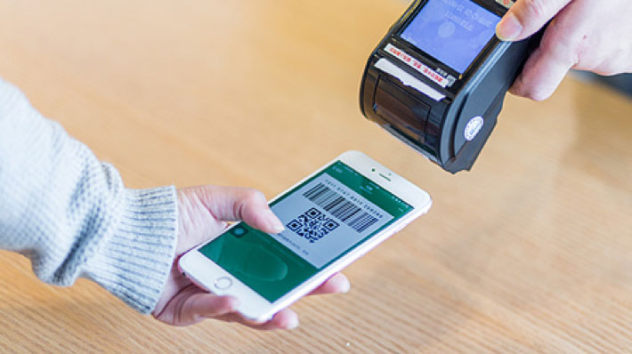

- 关注公众号后，请输入您的姓名和手机号来绑定您用来订餐的个人信息。
- 根据您订餐身份和时间的不同可以选择员工订餐、领导订餐、客户订餐、临时用餐这四种订餐方式，选择之后根据不同的流程输入不同的信息提交订单

- 后台会根据您不同的身份信息为您提供不同的二维码，您可以凭系统向您发送的二维码进入食堂用餐。
- 如果您订餐之后因为某些原因想退餐，你可以按照流程操作，最后经领导确认之后财务将会把钱返还给您。
- 员工订餐：采用提前订餐的方式。进入公众号——选择员工订餐——提交订单后自动进入付款界面，付款完成——完成订单(页面有记忆上次默认选择功能，方便下次订餐)。
- 领导订餐：不用提前订餐。开始会分配给每人一个可以永久使用的二维码，领导可以凭这个二维码去食堂点餐，但要设置一天打几次餐，每餐一份(早、中、晚餐)。
- 客户订餐：申请人登录“客户订餐”窗口，填入客户名称、人数、餐时并提交信息(不用付款)。后勤主管在手机或电脑上登录后台管理界面，点击确认申请后生成二维码，并发送给申请人手机(该申请人收到包含多份用餐信息的二维码，可以传给客人，客户在用餐时出示扫描后失效。相同二维码仅第一个使用者可用，并且客人需加公司微信公众号方可使用）。
找主管领导签字——找后勤主管签字——财务退款（退款需在开饭前3小时申请）
- 员工的二维码只能自己使用，不能转让
- 订餐需在食堂开饭时间前2~3小时订完，之后不能订餐；临时用餐开启时间为饭点结束前半个小时。
- 不同身份的用户二维码颜色不同，领导和客户为绿色，正常订餐员工为蓝色，临时订餐员工为红色。